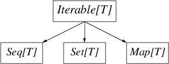

for loops and comprehensions, require and assertflatMapScalaは、Twitterで使われている主なアプリケーションプログラミング言語の一つだ。TwitterのインフラのほとんどはScalaで書かれているし、我々の業務を支える大規模ライブラリをいくつか持っている。Scalaは極めて効率的だが、一方で大きな言語でもある。我々の経験上、Scalaの適用には細心の注意が必要だ。Scalaの落とし穴は何か？ どの機能を採用し、どれを避けるべきか？ いつ“純粋関数型スタイル”を用い、いつ控えるべきか？ つまり、我々が見出した“Scalaの効果的(effective)な使い方”とは何か？ このガイドは、我々の経験を抽出し、一連のベストプラクティスを提供する小論文にまとめようとするものだ。Twitterは、Scalaを、主に分散システムを構成する大容量サービスの作成に利用している。だから、我々の助言にはバイアスがかかっている。しかし、ここにあるアドバイスのほとんどは、他の問題領域へも自然に置き換えることができるはずだ。これは法律じゃない、だから逸脱は正当化されるべきだ。
Scalaは、簡潔な表現を可能にする数多くのツールを提供している。タイピングが少なければ、読む量も少なくなり、読む量が少なくなれば、大抵はより早く読める。故に、簡潔さは明瞭さを高める。しかし、簡潔さはまた、正反対の効果をもたらす使い勝手の悪い道具ともなりえる。正確さの次に、いつも読み手のことを考えよう。
何よりも、Scalaでプログラムするのだ。君が書いているのはJavaではないし、Haskellでも、Pythonでもない。Scalaのプログラムは、それらのうちのいずれの言語で書かれたものとも違っている。Scalaを効果的に使うには、君の問題をScalaの用語で表現しなければならない。Javaのプログラムを、無理矢理にScalaになおしても仕方がない。ほとんどのやり方で、それはオリジナルより劣ったものになるだろう。
これは、Scalaの入門じゃない。読者は、Scalaに慣れ親しんでいることを前提としている。これからScalaを学びたい人は、以下のサイトを参照するといいだろう:
このガイドは生きたドキュメントであり、現在の「ベストプラクティス」が反映されていく。けれども、核となるアイデアは変わらない。常に可読性を優先せよ。ジェネリックなコードを書き、しかし明瞭さを犠牲にするな。シンプルな言語機能を利用せよ。それは偉大な力を与え、難解さを防ぐ（型システムでは特に）。とりわけ、トレードオフを常に意識すべきだ。洗練された言語は複雑な実装を必要とし、判断や、動作や、機能間の相互作用や、そして君の協力者に対する理解を困難にする。つまり、複雑さは洗練の税金なのだ。効用がコストを上回っていることを、常に確認しなければいけない。
では、楽しんでほしい。
コード整形の詳細は、（それが実際的である限りは）重要じゃない。当然だが、スタイルに本質的な良し悪しはないし、たいていは人それぞれの個人的嗜好は異なる。だけど、同じ整形ルールを一貫して適用することは、ほぼ全ての場合で可読性を高める。特定のスタイルに馴染んだ読み手は、さらに他のローカルな習慣を理解したり、言語文法の隅っこを解読したりする必要がない。
これは文法の重複度が高いScalaにおいては特に重要だ。メソッド呼び出しを例に挙げよう。メソッドは、“.”を付けても、ホワイトスペースを付けても呼び出せる。同様に、ゼロまたは一つの引数を取るメソッドでは丸カッコを付けても良いし、付けなくても良い、といった風に。さらに、異なるスタイルのメソッド呼び出しは、異なる文法上の曖昧さを露呈する！ 注意深く選ばれた整形ルールを一貫して適用することで、人間と機械の両方にとって、多くの曖昧さを解決できるのは間違いない。
我々は、Scala style guideを遵守すると同時に、以下に示すルールを追加した。
インデントはホワイトスペース2個。100カラムを超える行は避けよう。メソッドやクラス、オブジェクトの定義の間は一行空ける。
iやjやkは、ループ内ではほとんど期待される。Future.allではなくFuture.collectのような。
okやerr、defnが何を指すか知っている。一方で、sfriはそれほど一般的じゃない。valを使おう。` を使ってオーバーロードするのは避ける`type`の代わりに、typとする。user.setActive()ではなく、user.activate()とする。src.definedではなく、src.isDefinedとする。getを付けないsite.getCountではなく、site.countとする。object User {
def getUser(id: Int): Option[User]
}object User {
def get(id: Int): Option[User]
}User.getに比べて、User.getUserは何も情報を提供しないし、使うときに冗長だ。
import com.twitter.concurrent.{Broker, Offer}import com.twitter.concurrent._
scala.collections.immutable あるいは scala.collections.mutable をインポートして名前を修飾するimmutable.Map")import com.twitter
import concurrentimport com.twitter.concurrent中カッコは、複合式を作るのに使われる（“モジュール言語”では他の用途にも使われる）。そして、複合式の値は、リスト中の最後の式となる。単純な式に中カッコを使うのは避けよう。例えば、
def square(x: Int) = x*x
と書く代わりに、構文的にメソッドの本体を見分けやすい
def square(x: Int) = {
x * x
}
と書きたいと思うかもしれない。しかし、最初の記法の方が、乱雑さが少なく読みやすい。明確にするのが目的でないなら、構文的な儀礼は避けよう。
適用できる場合は、関数定義の中ではパターンマッチを直接使おう。
list map { item =>
item match {
case Some(x) => x
case None => default
}
}
とする代わりに、matchを折り畳んで
list map {
case Some(x) => x
case None => default
}
と書くと、リストの要素がmapされることが分かりやすい — the extra indirection does not elucidate. （←？）
ScalaDocを使ってAPIドキュメントを提供しよう。以下のように書く:
/**
* ServiceBuilder builds services
* ...
*/
しかし、以下は標準のScalaDocスタイルではない:
/** ServiceBuilder builds services
* ...
*/
アスキーアートや視覚的な装飾に頼ってはいけない。また、APIではない不必要なコメントをドキュメント化してはいけない。もし、自分のコードの挙動を説明するためにコメントを追加しているのに気づいたら、まずは、それが何をするコードなのか明白になるよう書き直せないか考え直してみよう。「見るからに、それは動作する (it works, obviously)」よりも「明らかにそれは動作する(obviously it works)」方が良い（ホーアには申し訳ないけど）。
（訳注: アントニー・ホーアは、自身のチューリング賞受賞講演の中で、『極めて複雑に設計して「明らかな」欠陥を無くすより、非常に簡素に設計して「明らかに」欠陥が無いようにする方が遥かに難しい』という趣旨の発言をしている。「コードから実装の意図を一目瞭然に読み取れるようにせよ」という主張は、上記のホーアの主張の真逆を言っている、ということだろう。）
型システムの主な目的は、プログラミングの誤りを検出することだ。型システムは、限定的な方式の静的検査を効果的に提供する。これにより、コンパイラが検証可能なコードにおいて、ある種の不変条件を表現できる。型システムがもたらす恩恵はもちろん他にもあるが、エラーチェックこそ、その存在理由（レーゾンデートル）だ。
我々が型システムを使う場合はこの目的を踏まえるべきだが、一方で、読み手にも気を配り続けなきゃいけない。型を慎重に使ったコードは明瞭さが高まるが、過剰に巧妙に使ったコードは読みにくいだけだ。
Scalaの強力な型システムは、学術的な探求と演習においてよく題材とされる(eg. Type level programming in Scala)。これらのテクニックは学術的に興味深いトピックだが、プロダクションコードでの応用において有用であることは稀だ。避けるべきだろう。
Scalaでは戻り型アノテーション(return type annotation)を省略できるが、一方でそれらは良いドキュメンテーションであり、publicメソッドでは特に重要だ。露出していないメソッドで、戻り型が明白な場合は省略しよう。
これは、Scalaコンパイラが生成するシングルトン型をミックスインするオブジェクトをインスタンス化する場合は特に重要だ。例えば、make 関数が:
trait Service
def make() = new Service {
def getId = 123
}
Service という戻り型を持たない場合、コンパイラは細別型(refinement type)である Object with Service{def getId: Int} を生成する。代わりに、明示的なアノテーションを使うと:
def make(): Service = new Service{}
make の公開型を変更することなく、さらに好きなだけtraitをミックスできるから、後方互換性の管理が容易になる。
変位(variance)は、ジェネリクスが派生型と結びつく時に現れる。変位は、コンテナ型の派生型と、コンテナ型に含まれる型の派生型がどう関連するかを定義する。Scalaでは変位アノテーションを宣言できるから、コレクションに代表される共通ライブラリの作者は、多数のアノテーションを扱う必要がある。変位アノテーションは、共用コードの使い勝手を高める上で重要だが、誤用すると危険なものとなりうる。
変位は、Scalaの型システムにおいて、高度だが必須の特徴だ。変位は、派生型の適用を助けるものとして、大いに（そして正しく）使われるべきだ。
不変コレクションは共変であるべきだ。要素型を受け取るメソッドは、コレクションを適切に“格下げ”すべきだ:
trait Collection[+T] {
def add[U >: T](other: U): Collection[U]
}
可変コレクションは不変であるべきだ。一般的に、可変コレクションにおいて共変は無効だ。この
trait HashSet[+T] {
def add[U >: T](item: U)
}
と、以下の型階層を見てほしい:
trait Mammal
trait Dog extends Mammal
trait Cat extends Mammal
もし今、犬(Dog)のハッシュセットがあるなら、
val dogs: HashSet[Dog]
それを哺乳類(Mammal)の集合として扱ったり、猫(Cat)を追加したりできる。
val mammals: HashSet[Mammal] = dogs
mammals.add(new Cat{})
これはもはや、犬のHashSetではない！
型エイリアス(type alias)は、簡便な名前を提供したり、意味を明瞭にするために使う。しかし、一目瞭然な型はエイリアスしない。
() => Int
は、簡潔かつ一般的な型を使っているので、
type IntMaker = () => Int
IntMaker
よりも明瞭だ。しかし、
class ConcurrentPool[K, V] {
type Queue = ConcurrentLinkedQueue[V]
type Map = ConcurrentHashMap[K, Queue]
...
}
は、意思疎通が目的で、簡潔さを高めたい場合に有用だ。
エイリアスが使える場合は、サブクラスを使ってはいけない。
trait SocketFactory extends (SocketAddress) => Socket
SocketFactoryは、Socketを生成する関数だ。型エイリアス
type SocketFactory = SocketAddress => Socket
を使う方がいい。今や、SocketFactory型の値のための関数リテラルが与えられているので、関数合成を使うことができる:
val addrToInet: SocketAddress => Long
val inetToSocket: Long => Socket
val factory: SocketFactory = addrToInet andThen inetToSocket
パッケージオブジェクトを使うと、型エイリアスをトップレベル名に結びつけられる:
package com.twitter
package object net {
type SocketFactory = (SocketAddress) => Socket
}
なお、型エイリアスは、型に対する別名の構文的な代わりとなるものであり、新しい型ではないことに留意しよう。
暗黙(implicit)は、型システムの強力な機能だが、慎重に使うべきだ。それらの解決ルールは複雑で、シンプルな字句検査においてさえ、実際に何が起きているか把握するのを困難にする。暗黙を間違いなく使ってもいいのは、以下の場面だ:
Manifestのため暗黙を使う場合は、暗黙を使わずに同じことを達成する方法がないか、常に確認しよう。
似通ったデータ型同士を、自動的に変換するのに暗黙を使うのはやめよう（例えば、リストをストリームに変換する等）。型はそれぞれ異なった動作をするので、暗黙に型が変換されていないか、読み手に気を使わせることになる。明示的に変換するべきだ。
Scalaが持つコレクションライブラリは、非常に総称的で、機能豊富で、強力で、組み合わせが容易だ。コレクションは高水準であり、多数の操作を提供している。多数のコレクション操作と変換を簡潔かつ読みやすく表現できるが、それらの機能を不注意に適用すると、しばしば正反対の結果を招く。全てのScalaプログラマは、collections design documentを読むべきだ。このドキュメントは、Scalaのコレクションライブラリに対する優れた洞察と意欲をもたらしてくれる。
常に、君のニーズを最もシンプルに満たすコレクションを使おう。
コレクションライブラリは巨大だ。Traversable[T]を基底とする精密な階層に加えて、ほとんどのコレクションにimmutableとmutableのバリエーションがある。複雑さはともかく、以下の図は、immutableとmutableの双方の階層にとって重要な区別を含んでいる。

Iterable[T]はイテレートできるコレクションで、iterator(とforeach)メソッドを提供する。Seq[T]は順序付けされたコレクション、Set[T]は数学的集合（要素が一意な順序の無いコレクション）、そしてMap[T]は順序の無い連想配列だ。
不変(immutable)コレクションを利用する。不変コレクションは、ほとんどの状況に適用できると同時に参照透過なので、プログラムがデフォルトでスレッドセーフであると判断しやすくなる。
mutable名前空間は明示的に使う。scala.collections.mutable._をインポートしてSetを参照する代わりに、
import scala.collections.mutable
val set = mutable.Set()
とすることで、可変な`Set`を使っていることが分かりやすくなる。
コレクション型のデフォルトコンストラクタを使う。例えば、順序付きの（かつ連結リストの動作が必要ない）シーケンスが欲しい場合は、いつでもSeq()コンストラクタを使おう:
val seq = Seq(1, 2, 3)
val set = Set(1, 2, 3)
val map = Map(1 -> "one", 2 -> "two", 3 -> "three")
このスタイルでは、コレクションの動作がその実装と切り離されているので、コレクションライブラリは最も適切な実装型を使うことができる。君が必要としているのはMapであって、必ずしも赤黒木じゃない。さらに、これらのデフォルトコンストラクタは、しばしば特殊化した表現を用いる。例えばMap()は、3つのキーを持つマップに対して、3つのフィールドを持つオブジェクトを使う（訳注: [Map3](http://www.scala-lang.org/api/current/scala/collection/immutable/Map$$Map3.html)クラスのこと）。
以上からの結論として、メソッドやコンストラクタでは、最も総称的なコレクション型を適切に受け取ろう。これは詰まるところ、通常は上記のIterable、Seq、SetあるいはMapのうち、どれか一つである。もしメソッドがシーケンスを必要とする場合は、List[T]ではなくSeq[T]を使おう。
関数型プログラミングでは、不変コレクションを望みの結果へと変形する方法として、パイプライン化された変換が推奨されている。大抵は、この手法により問題をとても簡潔に解決できるが、同時に読み手を困惑させることもある。変換をパイプライン化すると、しばしば作者の意図を理解するのが困難になり、暗黙的にしか示されていない途中結果を、全て追跡し続けるしかなくなるからだ。例えば、様々なプログラミング言語に対する投票結果である (language, num votes) のシーケンスを集計して、票数の最も多い言語から順番に表示するコードは、以下のように書ける:
val votes = Seq(("scala", 1), ("java", 4), ("scala", 10), ("scala", 1), ("python", 10))
val orderedVotes = votes
.groupBy(_._1)
.map { case (which, counts) =>
(which, counts.foldLeft(0)(_ + _._2))
}.toSeq
.sortBy(_._2)
.reverse
このコードは、簡潔でかつ正しい。しかし、ほとんどの読み手は、作者の元の意図を把握するのに苦労するだろう。途中結果とパラメータに名前を付けるのは、多くの場合で、作者の意図をハッキリさせるのに役立つ戦略の一つだ:
val votesByLang = votes groupBy { case (lang, _) => lang }
val sumByLang = votesByLang map { case (lang, counts) =>
val countsOnly = counts map { case (_, count) => count }
(lang, countsOnly.sum)
}
val orderedVotes = sumByLang.toSeq
.sortBy { case (_, count) => count }
.reverse
このコードでは、施される変換を中間値の名前に、操作されるデータ構造をパラメータ名にしている。これにより、以前と同じくらい簡潔であるだけでなく、作者の意図がよりいっそう明瞭に表現されている。もし、このスタイルを使うことで名前空間の汚染が心配なら、式を{}でグループ化すると良い:
val orderedVotes = {
val votesByLang = ...
...
}
高水準コレクションライブラリは、（高水準な構築物が一般的にそうであるように）性能の推測が難しい。コンピュータに直接指示するやり方、つまり命令型スタイルから遠ざかるほど、あるコード片が性能に与える影響を厳密に予測するのは困難になる。一方で、正確さを判断することは概して容易だし、読みやすさも向上する。Scalaの場合、Javaランタイムが事態をさらに複雑にしている。Scalaでは、ボクシング操作やアンボクシング操作がユーザから隠されており、性能やメモリ使用量の面で重大なペナルティを被ることがある。
低レベルの詳細に焦点を当てる前に、君のコレクションの使い方が適切かどうか確認しよう。また、データ構造に予期しない漸近的な複雑さがないか確かめよう。Scalaのさまざまなコレクションの複雑さについては、こちらで述べられている。
性能最適化の第一法則は、君のアプリケーションがなぜ遅いのかを理解することだ。最適化を始める前に、君のアプリケーションをプロファイル[1]してデータを取ろう。最初に注目するのは、回数の多いループや巨大なデータ構造だ。最適化への過度な取り組みは、たいてい無駄な努力に終わる。クヌースの「時期尚早な最適化は諸悪の根源」という格言を思い出そう。
性能やメモリ使用効率の良さが要求される場面では、多くの場合、低レベルコレクションを使うのが妥当だ。巨大なシーケンスには、リストより配列を使おう（不変のVectorコレクションは、配列への参照透過なインタフェースを提供する）。また、性能が重要な場合は、シーケンスを直接生成せずにバッファを使おう。
Javaコレクションとの相互運用のために、scala.collection.JavaConvertersを使おう。JavaConvertersは、暗黙変換を行うasJavaメソッドとasScalaメソッドを追加する。読み手を助けるために、これらの変換は明示的に行うようにしよう:
import scala.collection.JavaConverters._
val list: java.util.List[Int] = Seq(1,2,3,4).asJava
val buffer: scala.collection.mutable.Buffer[Int] = list.asScala
Modern services are highly concurrent — it is common for servers to coordinate 10s–100s of thousands of simultaneous operations — and handling the implied complexity is a central theme in authoring robust systems software.
Threads provide a means of expressing concurrency: they give you independent, heap-sharing execution contexts that are scheduled by the operating system. However, thread creation is expensive in Java and is a resource that must be managed, typically with the use of pools. This creates additional complexity for the programmer, and also a high degree of coupling: it’s difficult to divorce application logic from their use of the underlying resources.
This complexity is especially apparent when creating services that have a high degree of fan-out: each incoming request results in a multitude of requests to yet another tier of systems. In these systems, thread pools must be managed so that they are balanced according to the ratios of requests in each tier: mismanagement of one thread pool bleeds into another.
Robust systems must also consider timeouts and cancellation, both of which require the introduction of yet more “control” threads, complicating the problem further. Note that if threads were cheap these problems would be diminished: no pooling would be required, timed out threads could be discarded, and no additional resource management would be required.
Thus resource management compromises modularity.
Use Futures to manage concurrency. They decouple concurrent operations from resource management: for example, Finagle multiplexes concurrent operations onto few threads in an efficient manner. Scala has lightweight closure literal syntax, so Futures introduce little syntactic overhead, and they become second nature to most programmers.
Futures allow the programmer to express concurrent computation in a declarative style, are composable, and have principled handling of failure. These qualities has convinced us that they are especially well suited for use in functional programming languages, where this is the encouraged style.
Prefer transforming futures over creating your own. Future transformations ensure that failures are propagated, that cancellations are signalled, and frees the programmer from thinking about the implications of the Java memory model. Even a careful programmer might write the following to issue an RPC 10 times in sequence and then print the results:
val p = new Promise[List[Result]]
var results: List[Result] = Nil
def collect() {
doRpc() onSuccess { result =>
results = result :: results
if (results.length < 10)
collect()
else
p.setValue(results)
} onFailure { t =>
p.setException(t)
}
}
collect()
p onSuccess { results =>
printf("Got results %s\n", results.mkString(", "))
}
The programmer had to ensure that RPC failures are propagated,
interspersing the code with control flow; worse, the code is wrong!
Without declaring results volatile, we cannot ensure that results
holds the previous value in each iteration. The Java memory model is a
subtle beast, but luckily we can avoid all of these pitfalls by using
the declarative style:
def collect(results: List[Result] = Nil): Future[List[Result]] =
doRpc() flatMap { result =>
if (results.length < 9)
collect(result :: results)
else
result :: results
}
collect() onSuccess { results =>
printf("Got results %s\n", results.mkString(", "))
}
We use flatMap to sequence operations and prepend the result onto
the list as we proceed. This is a common functional programming idiom
translated to Futures. This is correct, requires less boilerplate, is
less error prone, and also reads better.
Use the Future combinators. Future.select, Future.join, and
Future.collect codify common patterns when operating over
multiple futures that should be combined.
The subject of concurrent collections is fraught with opinions, subtleties, dogma and FUD. In most practical situations they are a nonissue: Always start with the simplest, most boring, and most standard collection that serves the purpose. Don’t reach for a concurrent collection before you know that a synchronized one won’t do: the JVM has sophisticated machinery to make synchronization cheap, so their efficacy may surprise you.
If an immutable collection will do, use it — they are referentially
transparent, so reasoning about them in a concurrent context is
simple. Mutations in immutable collections are typically handled by
updating a reference to the current value (in a var cell or an
AtomicReference). Care must be taken to apply these correctly:
atomics must be retried, and vars must be declared volatile in order
for them to be published to other threads.
Mutable concurrent collections have complicated semantics, and make
use of subtler aspects of the Java memory model, so make sure you
understand the implications — especially with respect to publishing
updates — before you use them. Synchronized collections also compose
better: operations like getOrElseUpdate cannot be implemented
correctly by concurrent collections, and creating composite
collections is especially error prone.
Programs in the functional style tends to require fewer traditional
control structure, and read better when written in the declarative
style. This typically implies breaking your logic up into several
small methods or functions, and gluing them together with match
expressions. Functional programs also tend to be more
expression-oriented: branches of conditionals compute values of
the same type, for (..) yield computes comprehensions, and recursion
is commonplace.
Phrasing your problem in recursive terms often simplifies it, and if
the tail call optimization applies (which can be checked by the @tailrec
annotation), the compiler will even translate your code into a regular loop.
Consider a fairly standard imperative version of heap fix-down:
def fixDown(heap: Array[T], m: Int, n: Int): Unit = {
var k: Int = m
while (n >= 2*k) {
var j = 2*k
if (j < n && heap(j) < heap(j + 1))
j += 1
if (heap(k) >= heap(j))
return
else {
swap(heap, k, j)
k = j
}
}
}
Every time the while loop is entered, we’re working with state dirtied by the previous iteration. The value of each variable is a function of which branches were taken, and it returns in the middle of the loop when the correct position was found (The keen reader will find similar arguments in Dijkstra’s “Go To Statement Considered Harmful”).
Consider a (tail) recursive implementation[2]:
@tailrec
final def fixDown(heap: Array[T], i: Int, j: Int) {
if (j < i*2) return
val m = if (j == i*2 || heap(2*i) < heap(2*i+1)) 2*i else 2*i + 1
if (heap(m) < heap(i)) {
swap(heap, i, m)
fixDown(heap, m, j)
}
}
here every iteration starts with a well-defined clean slate, and there are no reference cells: invariants abound. It’s much easier to reason about, and easier to read as well. There is also no performance penalty: since the method is tail-recursive, the compiler translates this into a standard imperative loop.
This is not to say that imperative structures are not also valuable.
In many cases they are well suited to terminate computation early
instead of having conditional branches for every possible point of
termination: indeed in the above fixDown, a return is used to
terminate early if we’re at the end of the heap.
Returns can be used to cut down on branching and establish invariants. This helps the reader by reducing nesting (how did I get here?) and making it easier to reason about the correctness of subsequent code (the array cannot be accessed out of bounds after this point). This is especially useful in “guard” clauses:
def compare(a: AnyRef, b: AnyRef): Int = {
if (a eq b)
return 0
val d = System.identityHashCode(a) compare System.identityHashCode(b)
if (d != 0)
return d
// slow path..
}
Use returns to clarify and enhance readability, but not as you would
in an imperative language; avoid using them to return the results of a
computation. Instead of
def suffix(i: Int) = {
if (i == 1) return "st"
else if (i == 2) return "nd"
else if (i == 3) return "rd"
else return "th"
}
prefer:
def suffix(i: Int) =
if (i == 1) "st"
else if (i == 2) "nd"
else if (i == 3) "rd"
else "th"
but using a match expression is superior to either:
def suffix(i: Int) = i match {
case 1 => "st"
case 2 => "nd"
case 3 => "rd"
case _ => "th"
}
Note that returns can have hidden costs: when used inside of a closure,
seq foreach { elem =>
if (elem.isLast)
return
// process...
}
this is implemented in bytecode as an exception catching/throwing pair which, used in hot code, has performance implications.
for loops and comprehensionsfor provides both succinct and natural expression for looping and
aggregation. It is especially useful when flattening many sequences.
The syntax of for belies the underlying mechanism as it allocates
and dispatches closures. This can lead to both unexpected costs and
semantics; for example
for (item <- container) {
if (item != 2) return
}
may cause a runtime error if the container delays computation, making the return nonlocal!
For these reasons, it is often preferrable to call foreach,
flatMap, map, and filter directly — but do use fors when they
clarify.
require and assertrequire and assert both serve as executable documentation. Both are
useful for situations in which the type system cannot express the required
invariants. assert is used for invariants that the code assumes (either
internal or external), for example
val stream = getClass.getResourceAsStream("someclassdata")
assert(stream != null)
Whereas require is used to express API contracts:
def fib(n: Int) = {
require(n > 0)
...
}
Value oriented programming confers many advantages, especially when used in conjunction with functional programming constructs. This style emphasizes the transformation of values over stateful mutation, yielding code that is referentially transparent, providing stronger invariants and thus also easier to reason about. Case classes, pattern matching, destructuring bindings, type inference, and lightweight closure and method creation syntax are the tools of this trade.
Case classes encode ADTs: they are useful for modelling a large number of data structures and provide for succinct code with strong invariants, especially when used in conjunction with pattern matching. The pattern matcher implements exhaustivity analysis providing even stronger static guarantees.
Use the following pattern when encoding ADTs with case classes:
sealed trait Tree[T]
case class Node[T](left: Tree[T], right: Tree[T]) extends Tree[T]
case class Leaf[T](value: T) extends Tree[T]
the type Tree[T] has two constructors: Node and Leaf. Declaring the type sealed allows the compiler to do exhaustivity analysis since constructors cannot be added outside the source file.
Together with pattern matching, such modelling results in code that is both succinct “obviously correct”:
def findMin[T <: Ordered[T]](tree: Tree[T]) = tree match {
case Node(left, right) => Seq(findMin(left), findMin(right)).min
case Leaf(value) => value
}
While recursive structures like trees constitute classic applications of ADTs, their domain of usefulness is much larger. Disjoint unions in particular are readily modelled with ADTs; these occur frequently in state machines.
The Option type is a container that is either empty (None) or full
(Some(value)). They provide a safe alternative to the use of null,
and should be used in their stead whenever possible. They are a
collection (of at most one item) and they are embellished with
collection operations — use them!
Write
var username: Option[String] = None
...
username = Some("foobar")
instead of
var username: String = null
...
username = "foobar"
since the former is safer: the Option type statically enforces that username must be checked for emptyness.
Conditional execution on an Option value should be done with
foreach; instead of
if (opt.isDefined)
operate(opt.get)
write
opt foreach { value =>
operate(value)
}
The style may seem odd, but provides greater safety (we don’t call the
exceptional get) and brevity. If both branches are taken, use
pattern matching:
opt match {
case Some(value) => operate(value)
case None => defaultAction()
}
but if all that's missing is a default value, use getOrElse
operate(opt getOrElse defaultValue)
Do not overuse Option: if there is a sensible
default — a Null Object — use that instead.
Option also comes with a handy constructor for wrapping nullable values:
Option(getClass.getResourceAsStream("foo"))
is an Option[InputStream] that assumes a value of None should getResourceAsStream return null.
Pattern matches (x match { ...) are pervasive in well written Scala
code: they conflate conditional execution, destructuring, and casting
into one construct. Used well they enhance both clarity and safety.
Use pattern matching to implement type switches:
obj match {
case str: String => ...
case addr: SocketAddress => ...
Pattern matching works best when also combined with destructuring (for example if you are matching case classes); instead of
animal match {
case dog: Dog => "dog (%s)".format(dog.breed)
case _ => animal.species
}
write
animal match {
case Dog(breed) => "dog (%s)".format(breed)
case other => other.species
}
Write custom extractors but only with
a dual constructor (apply), otherwise their use may be out of place.
Don’t use pattern matching for conditional execution when defaults
make more sense. The collections libraries usually provide methods
that return Options; avoid
val x = list match {
case head :: _ => head
case Nil => default
}
because
val x = list.headOption getOrElse default
is both shorter and communicates purpose.
Scala provides syntactical shorthand for defining a PartialFunction:
val pf: PartialFunction[Int, String] = {
case i if i%2 == 0 => "even"
}
and they may be composed with orElse
val tf: (Int => String) = pf orElse { case _ => "odd"}
tf(1) == "odd"
tf(2) == "even"
Partial functions arise in many situations and are effectively
encoded with PartialFunction, for example as arguments to
methods
trait Publisher[T] {
def subscribe(f: PartialFunction[T, Unit])
}
val publisher: Publisher[Int] = ..
publisher.subscribe {
case i if isPrime(i) => println("found prime", i)
case i if i%2 == 0 => count += 2
/* ignore the rest */
}
or in situations that might otherwise call for returning an Option:
// Attempt to classify the the throwable for logging.
type Classifier = Throwable => Option[java.util.logging.Level]
might be better expressed with a PartialFunction
type Classifier = PartialFunction[Throwable, java.util.Logging.Level]
as it affords greater composability:
val classifier1: Classifier
val classifier2: Classifier
val classifier = classifier1 orElse classifier2 orElse { _ => java.util.Logging.Level.FINEST }
Destructuring value bindings are related to pattern matching; they use the same mechanism but are applicable when there is exactly one option (lest you accept the possibility of an exception). Destructuring binds are particularly useful for tuples and case classes.
val tuple = ('a', 1)
val (char, digit) = tuple
val tweet = Tweet("just tweeting", Time.now)
val Tweet(text, timestamp) = tweet
Fields in scala are computed by need when val is prefixed with
lazy. Because fields and methods are equivalent in Scala (lest the fields
are private[this])
lazy val field = computation()
is (roughly) short-hand for
var _theField = None
def field = if (_theField.isDefined) _theField.get else {
_theField = Some(computation())
_theField.get
}
i.e., it computes a results and memoizes it. Use lazy fields for this purpose, but avoid using lazyness when lazyness is required by semantics. In these cases it's better to be explicit since it makes the cost model explicit, and side effects can be controlled more precisely.
Lazy fields are thread safe.
Method parameters may be specified by-name, meaning the parameter is bound not to a value but to a computation that may be repeated. This feature must be applied with care; a caller expecting by-value semantics will be surprised. The motivation for this feature is to construct syntactically natural DSLs — new control constructs in particular can be made to look much like native language features.
Only use call-by-name for such control constructs, where it is obvious to the caller that what is being passed in is a “block” rather than the result of an unsuspecting computation. Only use call-by-name arguments in the last position of the last argument list. When using call-by-name, ensure that method is named so that it is obvious to the caller that its argument is call-by-name.
When you do want a value to be computed multiple times, and especially when this computation is side effecting, use explicit functions:
class SSLConnector(mkEngine: () => SSLEngine)
The intent remains obvious and caller is left without surprises.
flatMapflatMap — the combination of map with flatten — deserves special
attention, for it has subtle power and great utility. Like its brethren map, it is frequently
available in nontraditional collections such as Future and Option. Its behavior
is revealed by its signature; for some Container[A]
flatMap[B](f: A => Container[B]): Container[B]
flatMap invokes the function f for the element(s) of the collection producing a new collection, (all of) which are flattened into its result. For example, to get all permutations of two character strings that aren't the same character repeated twice:
val chars = 'a' to 'z'
val perms = chars flatMap { a =>
chars flatMap { b =>
if (a != b) Seq("%c%c".format(a, b))
else Seq()
}
}
which is equivalent to the more concise for-comprehension (which is — roughly — syntactical sugar for the above):
val perms = for {
a <- chars
b <- chars
if a != b
} yield "%c%c".format(a, b)
flatMap is frequently useful when dealing with Options — it will
collapse chains of options down to one,
val host: Option[String] = ..
val port: Option[Int] = ..
val addr: Option[InetSocketAddress] =
host flatMap { h =>
port map { p =>
new InetSocketAddress(h, p)
}
}
which is also made more succinct with for
val addr: Option[InetSocketAddress] = for {
h <- host
p <- port
} yield new InetSocketAddress(h, p)
The use of flatMap in Futures is discussed in the
futures section.
Much of Scala’s vastness lie in its object system. Scala is a pure language in the sense that all values are objects; there is no distinction between primitive types and composite ones. Scala also features mixins allowing for more orthogonal and piecemeal construction of modules that can be flexibly put together at compile time with all the benefits of static type checking.
A motivation behind the mixin system was to obviate the need for traditional dependency injection. The culmination of this “component style” of programming is the cake pattern.
In our use, however, we’ve found that Scala itself removes so much of the syntactical overhead of “classic” (constructor) dependency injection that we’d rather just use that: it is clearer, the dependencies are still encoded in the (constructor) type, and class construction is so syntactically trivial that it becomes a breeze. It’s boring and simple and it works. Use dependency injection for program modularization, and in particular, prefer composition over inheritance — for this leads to more modular and testable programs. When encountering a situation requiring inheritance, ask yourself: how you structure the program if the language lacked support for inheritance? The answer may be compelling.
Dependency injection typically makes use of traits,
trait TweetStream {
def subscribe(f: Tweet => Unit)
}
class HosebirdStream extends TweetStream ...
class FileStream extends TweetStream ..
class TweetCounter(stream: TweetStream) {
stream.subscribe { tweet => count += 1 }
}
It is common to inject factories — objects that produce other objects. In these cases, favor the use of simple functions over specialized factory types.
class FilteredTweetCounter(mkStream: Filter => TweetStream) {
mkStream(PublicTweets).subscribe { tweet => publicCount += 1 }
mkStream(DMs).subscribe { tweet => dmCount += 1 }
}
Dependency injection does not at all preclude the use of common interfaces, or the implemention of common code in traits. Quite contrary— the use of traits are highly encouraged for exactly this reason: multiple interfaces (traits) may be implemented by a concrete class, and common code can be reused across all such classes.
Keep traits short and orthogonal: don’t lump separable functionality into a trait, think of the smallest related ideas that fit together. For example, imagine you have an something that can do IO:
trait IOer {
def write(bytes: Array[Byte])
def read(n: Int): Array[Byte]
}
separate the two behaviors:
trait Reader {
def read(n: Int): Array[Byte]
}
trait Writer {
def write(bytes: Array[Byte])
}
and mix them together to form what was an IOer: new Reader with Writer… Interface minimalism leads to greater orthogonality and cleaner modularization.
Scala has very expressive visibility modifiers. It’s important to use these as they define what constitutes the public API. Public APIs should be limited so users don’t inadvertently rely on implementation details and limit the author’s ability to change them: They are crucial to good modularity. As a rule, it’s much easier to expand public APIs than to contract them. Poor annotations can also compromise backwards binary compatibility of your code.
private[this]A class member marked private,
private val x: Int = ...
is visible to all instances of that class (but not their subclasses). In most cases, you want private[this].
private[this] val: Int = ..
which limits visibilty to the particular instance. The Scala compiler is also able to translate private[this] into a simple field access (since access is limited to the statically defined class) which can sometimes aid performance optimizations.
It’s common in Scala to create singleton class types, for example
def foo() = new Foo with Bar with Baz {
...
}
In these situations, visibility can be constrained by declaring the returned type:
def foo(): Foo with Bar = new Foo with Bar with Baz {
...
}
where callers of foo() will see a restricted view (Foo with Bar) of the returned instance.
Do not use structural types in normal use. They are a convenient and powerful feature, but unfortunately do not have an efficient implementation on the JVM. However — due to an implemenation quirk — they provide a very nice shorthand for doing reflection.
val obj: AnyRef
obj.asInstanceOf[{def close()}].close()
We spend a lot of time tuning garbage collection in production. The garbage collection concerns are largely similar to those of Java though idiomatic Scala code tends to generate more (short-lived) garbage than idiomatic Java code — a byproduct of the functional style. Hotspot’s generational garbage collection typically makes this a nonissue as short lived garbage effectively free in most circumstances
Before tackling GC performance issues, watch this presentation by Attila that illustrates some of our experiences with GC tuning.
In Scala proper, your only tool to mitigate GC problems is to generate less garbage; but do not act without data! Unless you are doing something obviously degenerate, use the various Java profiling tools — our own include heapster and gcprof.
When we write code in Scala that is used from Java, we ensure that usage from Java remains idiomatic. Oftentimes this requires no extra effort — classes and pure traits are exactly equivalent to their Java counterpart — but sometimes separate Java APIs need to be provided. A good way to get a feel for your library’s Java API is to write a unittest in Java (just for compilation); this also ensures that the Java-view of your library remains stable over time as the Scala compiler can be volatile in this regard.
Traits that contain implementation are not directly usable from Java: extend an abstract class with the trait instead.
// Not directly usable from Java
trait Animal {
def eat(other: Animal)
def eatMany(animals: Seq[Animal) = animals foreach(eat(_))
}
// But this is:
abstract class JavaAnimal extends Animal
The most important standard libraries at Twitter are Util and Finagle. Util should be considered an extension to the Scala and Java standard libraries, providing missing functionality or more appropriate implementations. Finagle is our RPC system; the kernel distributed systems components.
Futures have been discussed briefly in the concurrency section. They are the central mechanism for coordination asynchronous processes and are pervasive in our codebase and core to Finagle. Futures allow for the composition of concurrent events, and simplifies reasoning about highly concurrent operations. They also lend themselves to a highly efficient implementation on the JVM.
Twitter’s futures are asynchronous, so blocking operations — basically any operation that can suspend the execution of its thread; network IO and disk IO are examples — must be handled by a system that itself provides futures for the results of said operations. Finagle provides such a system for network IO.
Futures are plain and simple: they hold the promise for the result of a computation that is not yet complete. They are a simple container — a placeholder. A computation could fail of course, and this must also be encoded: a Future can be in exactly one of 3 states: pending, failed or completed.
Let's revisit what we mean by composition: combining simpler components into more complicated ones. The canonical example of this is function composition: Given functions f and g, the composite function (g∘f)(x) = g(f(x)) — the result of applying x to f first, and then the result of that to g — can be written in Scala:
val f = (i: Int) => i.toString
val g = (s: String) => s+s+s
val h = g compose f // : Int => String
scala> h(123)
res0: java.lang.String = 123123123the function h being the composite. It is a new function that combines both f and g in a predefined way.
Futures are a type of collection — they are a container of
either 0 or 1 elements — and you’ll find they have standard
collection methods (eg. map, filter, and foreach). Since a Future’s
value is deferred, the result of applying any of these methods
is necessarily also deferred; in
val result: Future[Int]
val resultStr: Future[String] = result map { i => i.toString }
the function { i => i.toString } is not invoked until the integer value becomes available, and the transformed collection resultStr is also in pending state until that time.
Lists can be flattened;
val listOfList: List[List[Int]] = ..
val list: List[Int] = listOfList.flatten
and this makes sense for futures, too:
val futureOfFuture: Future[Future[Int]] = ..
val future: Future[Int] = futureOfFuture.flatten
since futures are deferred, the implementation of flatten — it returns immediately — has to return a future that is the result of waiting for the completion of the outer future (Future[Future[Int]]) and after that the inner one (Future[Future[Int]]). If the outer future fails, the flattened future must also fail.
Futures (like Lists) also define flatMap; Future[A] defines its signature as
flatMap[B](f: A => Future[B]): Future[B]
which is like the combination of both map and flatten, and we could implement it that way:
def flatMap[B](f: A => Future[B]): Future[B] = {
val mapped: Future[Future[B]] = this map f
val flattened: Future[B] = mapped.flatten
flattened
}
This is a powerful combination! With flatMap we can define a Future that
is the result of two futures sequenced, the second future computed based
on the result of the first one. Imagine we needed to do two RPCs in order
to authenticate a user (id), we could define the composite operation in the
following way:
def getUser(id: Int): Future[User]
def authenticate(user: User): Future[Boolean]
def isIdAuthed(id: Int): Future[Boolean] =
getUser(id) flatMap { user => authenticate(user) }
an additional benefit to this type of composition is that error handling is built-in: the future returned from isAuthed(..) will fail if either of getUser(..) or authenticate(..) does with no extra error handling code.
Future callback methods (respond, onSuccess',onFailure,ensure`)
return a new future that is chained to its parent. This future is guaranteed
to be completed only after its parent, enabling patterns like
acquireResource()
future onSuccess { value =>
computeSomething(value)
} ensure {
freeResource()
}
where freeResource() is guaranteed to be executed only after computeSomething, allowing for emulation of the native try .. finally pattern.
Use onSuccess instead of foreach — it is symmetrical to onFailure and
is a better name for the purpose, and also allows for chaining.
Always try to avoid creating your own Promises: nearly every task
can be accomplished via the use of predefined combinators. These
combinators ensure errors and cancellations are propagated, and generally
encourage dataflow style programming which usually obviates the need for synchronization and
volatility declarations.
Code written in tail-recursive style are not subject so space leaks, allowing for efficient implementation of loops in dataflow-style:
case class Node(parent: Option[Node], ...)
def getNode(id: Int): Future[Node] = ...
def getHierarchy(id: Int, nodes: List[Node] = Nil): Future[Node] =
getNode(id) flatMap {
case n@Node(Some(parent), ..) => getHierarchy(parent, n :: nodes)
case n => Future.value((n :: nodes).reverse)
}
Future defines many useful methods: Use Future.value() and
Future.exception() to create pre-satisfied futures.
Future.collect(), Future.join() and Future.select() provide
combinators that turn many futures into one (ie. the gather part of a
scatter-gather operation).
Futures implement a weak form of cancellation. Invoking Future#cancel
does not directly terminate the computation but instead propagates a
level triggered signal that may be queried by whichever process
ultimately satisfies the future. Cancellation flows in the opposite
direction from values: a cancellation signal set by a consumer is
propagated to its producer. The producer uses onCancellation on
Promise to listen to this signal and act accordingly.
This means that the cancellation semantics depend on the producer, and there is no default implementation. Cancellation is a but a hint.
Util’s
Local
provides a reference cell that is local to a particular future dispatch tree. Setting the value of a local makes this
value available to any computation deferred by a Future in the same thread. They are analagous to thread locals,
except their scope is not a Java thread but a tree of “future threads”. In
trait User {
def name: String
def incrCost(points: Int)
}
val user = new Local[User]
...
user() = currentUser
rpc() ensure {
user().incrCost(10)
}
user() in the ensure block will refer to the value of the user local at the time the callback was added.
As with thread locals, Locals can be very convenient, but should
almost always be avoided: make sure the problem cannot be sufficiently
solved by passing data around explicitly, even if it is somewhat
burdensome.
Locals are used effectively by core libraries for very common concerns — threading through RPC traces, propagating monitors, creating “stack traces” for future callbacks — where any other solution would unduly burden the user. Locals are inappropriate in almost any other situation.
The lessons herein are those of Twitter’s Scala community — I hope I’ve been a faithful chronicler.
Blake Matheny, Nick Kallen, and Steve Gury provided much helpful guidance and many excellent suggestions.